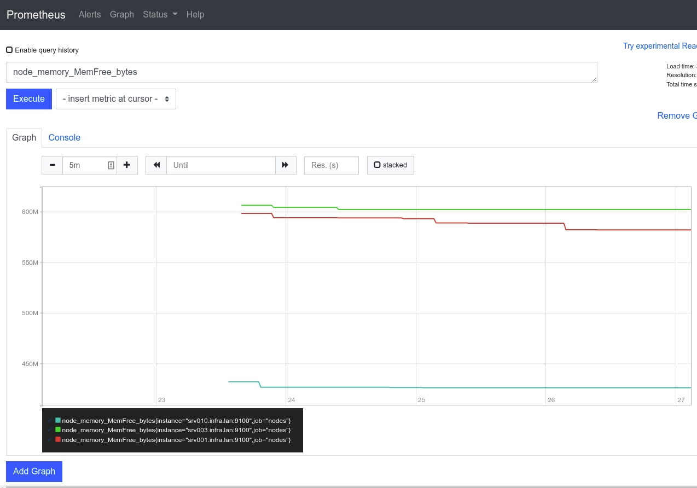

3. Monitoring with Prometheus
Infrastructure Automation
HOGENT applied
computer science
Bert Van Vreckem & Thomas Parmentier
2024-2025
Monitoring
Learning goals
- Understanding the concept of monitoring, observability
- Setting up a monitoring dashboard with Prometheus
What is monitoring?
Keep track of systems running in production
- Problem detection
- Troubleshooting
- Reporting and improvement
Part of Reliability Engineering
What to monitor?
Anything that matters for your business! -> monitoring targets
- Demand
- Workload
- Availability, performance, faults/errors
- Resources (technical metrics)
- e.g. CPU, connection pool capacity, …
- Business metrics
Early monitoring solutions: Alerting
- Nagios, Icinga, Zmon, Sensu, …
- Regularly execute checks (scripts)
- Nonzero exit status? Generate alert!

Early monitoring solutions: Graphing
- E.g. Graphite, mrtg
- Backed by time series database filled with metrics
- Separate tool for data collection (e.g. collectd, statsd)

#monitoringsucks
- Trending in 2011
- Cloud (r)evolution
- Scaling up, automation
- Servers as pets -> servers as cattle
- Many tools, not suited for new needs
- Not scalable
- Manual approach to system administration
- Too many alerts
Characteristics
- Graphing/alerting are separate
- Manual approach to system administration
- No specific tools for log mgmt (tail, grep, awk!)
Monitoring in a DevOps world
- Integrated
- metrics, logging, alerting, visualisation
- Self service
- Service discovery
- Dynamic
- New nodes, destroyed nodes, …
- Collaborative
- Shared between all disciplines within the team
- Observable applications
- Applications provide their own instrumentation
- Devs should implement this!
Types of monitoring
- Synthetic monitoring
- End user (experience) monitoring
- System monitoring
- Network monitoring
- Software metrics
- Application monitoring
- Log monitoring
Synthetic monitoring
- = generate traffic that simulates user interaction
- Is the application available for users?
- Simulate interactions programmatically
- Generates extra load!
Simple synthetic monitoring
$ time curl -I -s https://hogent.be/
HTTP/2 200
date: Fri, 28 Oct 2022 10:54:36 GMT
content-type: text/html;charset=UTF-8
vary: Accept-Encoding
...
real 0m0,235s
user 0m0,097s
sys 0m0,019sEnd user monitoring
- = gather data from real end user activity
- Response times
- Error rates
- Number of user interactions
- User metadata (device type, OS version, geolocation, …)
- More variation in interactions
- No extra load
System monitoring
- This is what we are most familiar with!
- CPU, Memory, Disk I/O, Network I/O, …
- Per process/per container/per VM metrics
- Kernel metrics, syscalls, …
System monitoring does not show whether your application is available to users!
Network monitoring
- Simple Network Management Protocol (SNMP)
- Implemented in most network devices!
- Key metrics:
- bandwith utilization
- packet processing rates
- latency
- interface error rates
- Should be observed for every device on routing path of service
Software metrics
- Some 3rd party applications already expose performance metrics
- Not standardized, different for each application
- Usually, plugins exist to integrate in your monitoring solution
Application Monitoring
i.e. the application that your customers use and that your business generates income from!
- Often blind spot!
- Application problems:
- App logic flaws
- Capacity constraints
- Dependency failures
- Measuring app health:
- Transaction throughput (e.g. #completed reqs/s)
- Response times
- Error rates (e.g. HTTP 2xx, 4xx, 5xx)
Log monitoring
- System and application logs
- Often best way to determine what went wrong and to find how to fix it
- Application logs only work if devs have the app generate logs!
- Has its own set of specialised tooling (e.g. ELK stack, Splunk, …)
I find that putting [devs] on call and making them figure out what’s going on in their application from their own logs, is the absolute fastest way to improve their logging.
–Ernest Mueller (Director of Engineering, Six Nines IT)
Putting it all together
- Enormous amount of metrics can be monitored
- Granularity also has impact
- every 1s, 10s, 1m, …?
- Determine what is most important for your situation
- Don’t forget about application monitoring
- Devs should make their apps observable!
- Share dashboards with application owners
Prometheus
Prometheus overview
- Open source systems monitoring & alerting
- Originally from SoundCloud
- Now part of Cloud Native Computing Foundation
- Home of Kubernetes
- Collects and stores metrics as time series data
- time stamp
- key-value pairs called labels
Features
- Time series collections via pull model over HTTP
- PromQL query language
- Service discovery or static configuration
- No reliance on distributed storage
- Multiple modes of graphing, dashboarding
Components
- Prometheus server:
- scrapes, stores TS data
- Client
libraries:
- for instrumenting application code
- Exporters
- for exposing metrics so Prometheus can scrape them
- e.g. Node exporter for basic system metrics
- also: MySQL, Kubernetes, SNMP, …
- AlertManager
- …


Lab Assignment
- Install Prometheus collection for Ansible
- Install Node Exporter on all VMs
- role
prometheus.prometheus.node_exporter
- role
- Install Prometheus on a new VM
- srv004, 172.16.128.4
- role
prometheus.prometheus.prometheus
- Collect metrics
- Set up Grafana dashboard